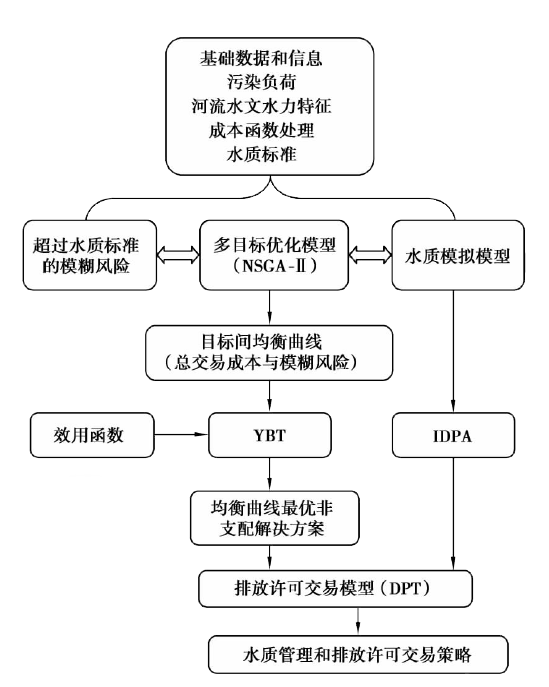
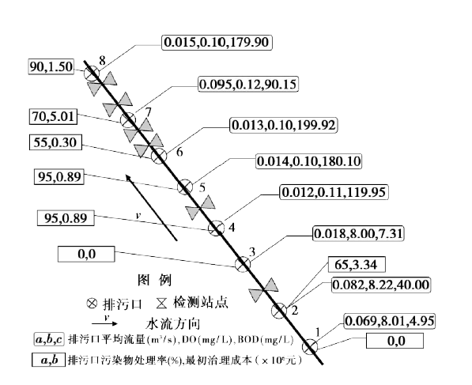
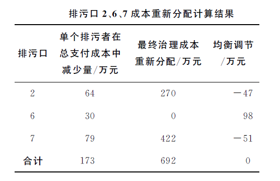

数理经济学
基于均衡理念的流域污染物排放许可交易
Created by Chiffon
13720064 郎大为
OUTLINES
- 背景介绍
- 选用的模型
- 遗传算法改进序列(NSGA-II)
- Young交易理论(YBT)
- 污染物初始排放许可分配(IDPA)模型
- 排放许可交易DPT模型
- 案例分析
背景介绍
排污许可证
- 排污许可证商品化
- 厂商根据自身排污情况购买许可证
- 通过市场调节
研究背景
- 污染物排放许可交易制度首先由Crocker[3]和Dales[4]提出
- 大部分研究是基于:
- 经济学原理层面
- 实例研究
- 确定性研究
研究背景
- 污染物排放的风险
- 治污成本变动
目标函数
- 治污成本最小化
- 低水位水质风险最小化
研究方法
遗传算法改进序列(NSGA-II)
NSGA-II是目前最流行的多目标优化算法之一，它降低了非劣排序遗传算法的复杂性，具有运行速度快，解集的收敛性好的优点，成为其他多目标优化算法性能的基准。
遗传算法改进序列(NSGA-II)
\[ \begin{align} \min &\left(f_1(x), f_2(x),\ldots, f_k(x) \right) \\ \text{s.t. } &x\in X, \end{align}\]
遗传算法改进序列(NSGA-II)
\(x^1\in X\) 比 \(x^2\in X\) 是一个更优解(Pareto optimal solutions)
- \(f_i(x^1)\leq f_i(x^2)\) for all indices \(i \in \left\{ {1,2,\dots,k } \right\}\)
- \(f_j(x^1) < f_j(x^2)\) for at least one index \(j \in \left\{ {1,2,\dots,k } \right\}\).
Young交易理论(YBT)
- Young Bargaining Theory
- 提供了一种调查双方价格满足程度的方法
- 模型假定存在2种有限性:
- 可能的交易数目\(l_1\)
- 代理商数量\(l_2\)
- 在每个周期中，2个随机给定代理商的 \(j \in l_1,k \in l_2\) 开始有2个参与者1和2独自进行博弈。
Young交易理论(YBT)
- 在用NSGA-II方法获得均衡曲线的基础上
- YBT模型用于选择无偏差的最优解决方案。
污染物初始排放许可分配(IDPA)模型
- Initial Discharge Permit Allocation model
- 用于检测污染物的排放负荷 \[maxZ_1 = \sum_{i=1}^{n} \overline{p_i}\] \[subject \quad to\quad c_{al} \ge c_a\]
排放许可交易DPT模型
- NGGA-II,YBT对排污者i提供了:
- 污染物的最优处理水平
- 污染物的最优限定排放负荷$p_i$，
- IPDA提供了最大污染物排放负荷\(\overline{p_i}\)
排放许可交易DPT模型
- \(\overline{p_i} < p_i\)
- \(\overline{p_j} > p_j\)

案例分析
监测指标
- DO
- 环境监测氧参数(dissolved oxygen;DO)空气中的分子态氧溶解在水中称为溶解氧。
- BOD
- 生化需氧量(Biochemical Oxygen Demand)或生化耗氧量(五日化学需氧量),表示水中有机物等需氧污染物质含量的一个综合指示



